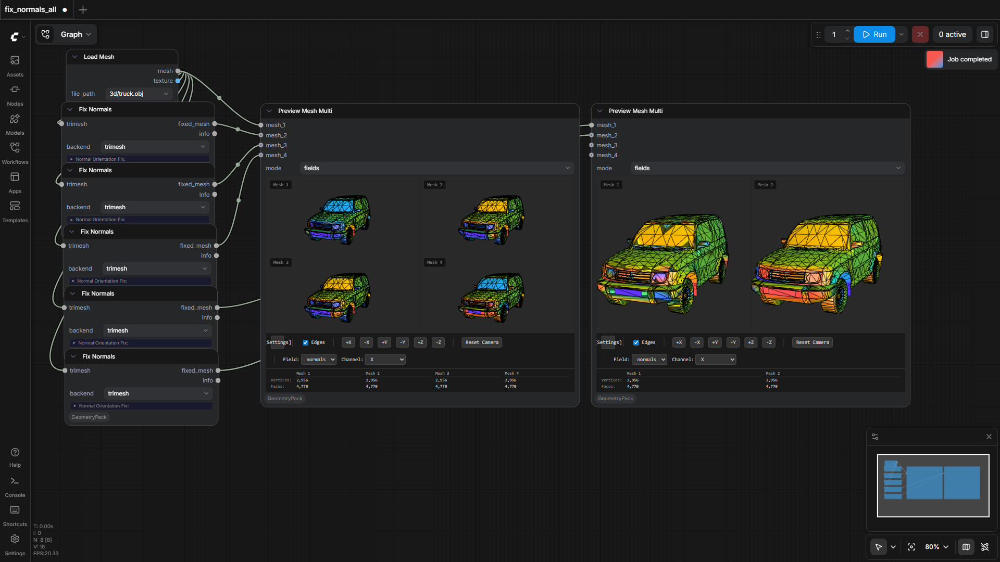
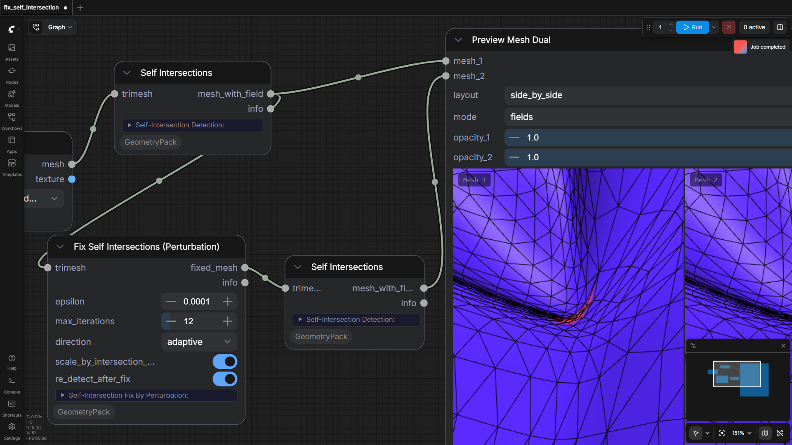
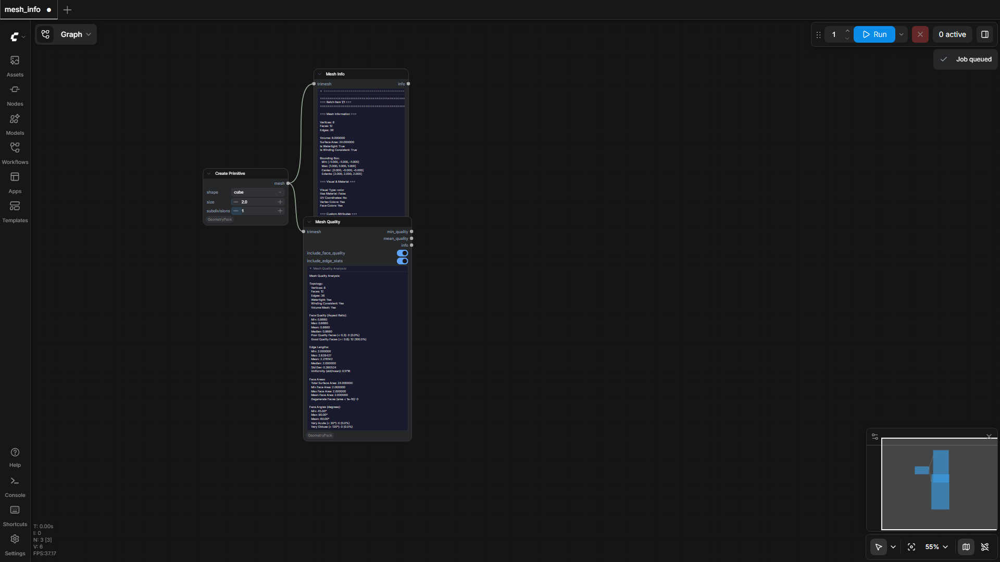
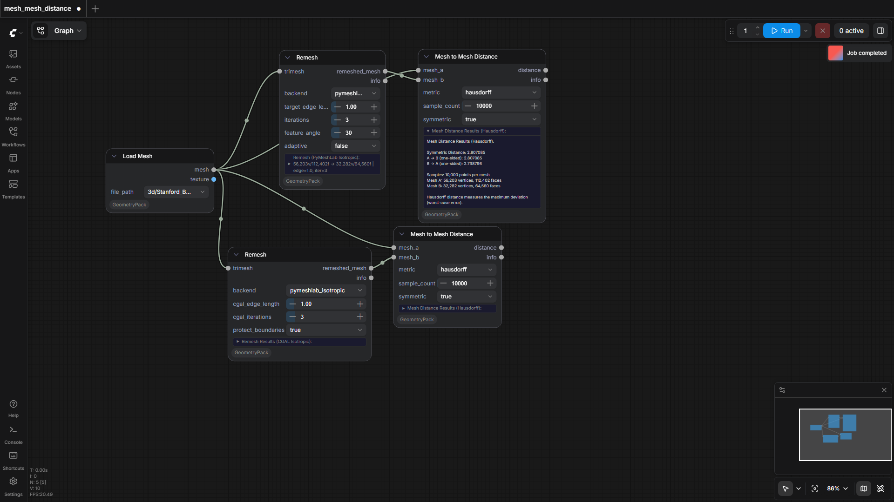
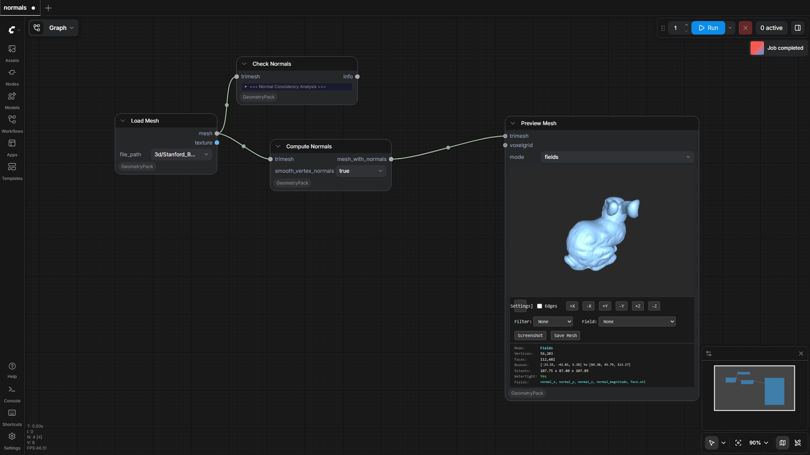
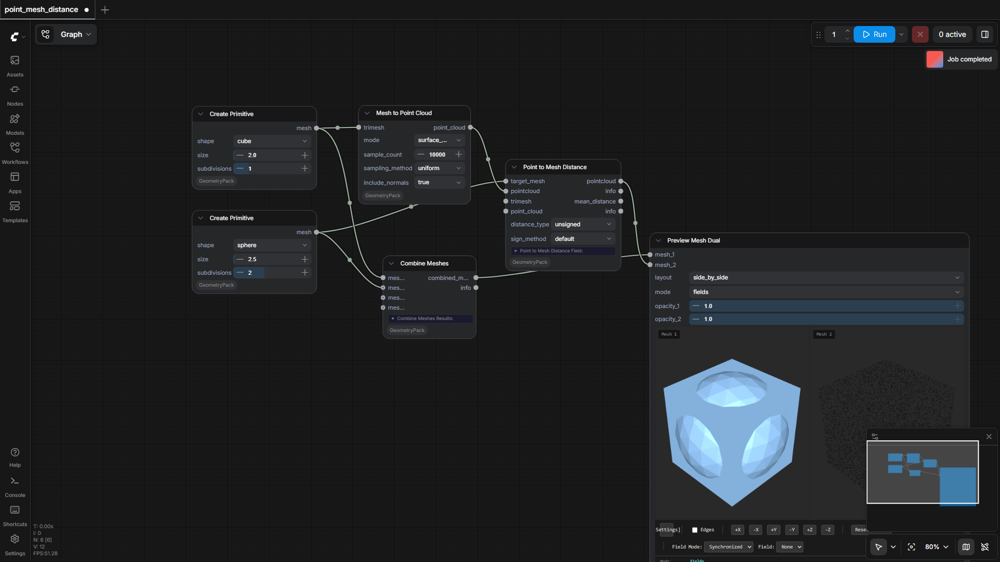
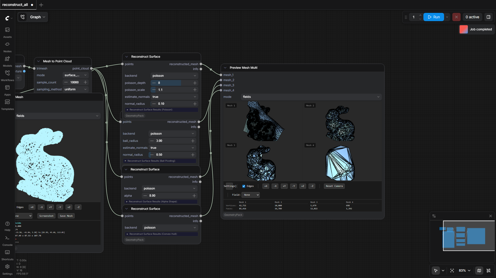
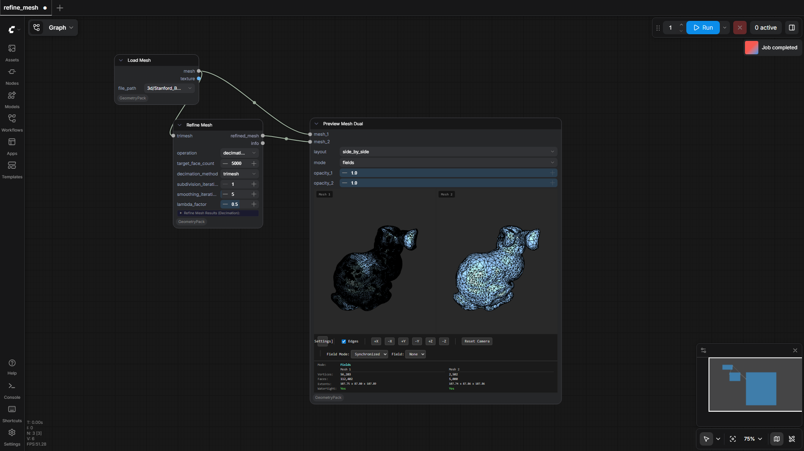

93.3%
28 passed
2 failed
28/30 tests
Workflows

alpha_wrap
pass

batch_remesh
pass

boolean_ops
pass
No screenshot
boolean_ops_all
fail

decimate
pass

decimate_all
pass

depth_map_to_mesh
pass

fix_normals_all
pass

fix_self_intersection
pass

mesh_info
pass

mesh_mesh_distance
pass

normals
pass

point_mesh_distance
pass

preview_mesh_threejs
pass

reconstruct_all
pass

refine_mesh
pass

remesh_intersections
pass

remeshing
pass

sharpen
pass

sharpen_all
pass

side_by_side_viewer
pass

skeleton_all
pass

skeleton_extraction
pass

sMOOth
pass

smooth_all
pass

surface_reconstruction
pass
No screenshot
test_loading
fail

transform
pass

uv_unwrap
pass

view_texture
pass
Failed Tests
boolean_ops_all
11.26s
Workflow execution failed: {'prompt_id': '64ef5e2f-6442-439f-bc7e-1f9e4957f613', 'node_id': '4', 'node_type': 'GeomPackBoolean', 'executed': ['1', '2'], 'exception_message': 'DLL load failed while importing bpy: The specified procedure could not be found.\n\nWorker traceback:\nTraceback (most recent call last):\n File "C:\\Users\\stduser\\AppData\\Local\\Temp\\comfyui_pvenv_n6n5p7p_\\persistent_worker.py", line 1762, in main\n result = method(**inputs)\n File "D:\\a\\comfy-gpu-ci\\comfy-gpu-ci\\test_workspaces\\GeometryPack-2126\\ComfyUI\\comfy_api\\latest\\_io.py", line 1833, in EXECUTE_NORMALIZED\n to_return = cls.execute(*args, **kwargs)\n File "D:\\a\\comfy-gpu-ci\\comfy-gpu-ci\\test_workspaces\\GeometryPack-2126\\ComfyUI\\custom_nodes\\ComfyUI-GeometryPack\\nodes\\blender_boolean\\boolean.py", line 102, in execute\n result_data = _bpy_boolean_operation(\n vertices_a=np.asarray(mesh_a.vertices, dtype=np.float32),\n ...<3 lines>...\n operation=blender_op\n )\n File "D:\\a\\comfy-gpu-ci\\comfy-gpu-ci\\test_workspaces\\GeometryPack-2126\\ComfyUI\\custom_nodes\\ComfyUI-GeometryPack\\nodes\\blender_boolean\\boolean.py", line 17, in _bpy_boolean_operation\n import bpy\nImportError: DLL load failed while importing bpy: The specified procedure could not be found.\n\n', 'exception_type': 'comfy_env.isolation.workers.base.WorkerError', 'traceback': [' File "D:\\a\\comfy-gpu-ci\\comfy-gpu-ci\\test_workspaces\\GeometryPack-2126\\ComfyUI\\execution.py", line 535, in execute\n output_data, output_ui, has_subgraph, has_pending_tasks = await get_output_data(prompt_id, unique_id, obj, input_data_all, execution_block_cb=execution_block_cb, pre_execute_cb=pre_execute_cb, v3_data=v3_data)\n ^^^^^^^^^^^^^^^^^^^^^^^^^^^^^^^^^^^^^^^^^^^^^^^^^^^^^^^^^^^^^^^^^^^^^^^^^^^^^^^^^^^^^^^^^^^^^^^^^^^^^^^^^^^^^^^^^^^^^^^^^^^^^^^^^^^^^^^^^^^^^^^^^^^^^^^\n', ' File "D:\\a\\comfy-gpu-ci\\comfy-gpu-ci\\test_workspaces\\GeometryPack-2126\\ComfyUI\\execution.py", line 335, in get_output_data\n return_values = await _async_map_node_over_list(prompt_id, unique_id, obj, input_data_all, obj.FUNCTION, allow_interrupt=True, execution_block_cb=execution_block_cb, pre_execute_cb=pre_execute_cb, v3_data=v3_data)\n ^^^^^^^^^^^^^^^^^^^^^^^^^^^^^^^^^^^^^^^^^^^^^^^^^^^^^^^^^^^^^^^^^^^^^^^^^^^^^^^^^^^^^^^^^^^^^^^^^^^^^^^^^^^^^^^^^^^^^^^^^^^^^^^^^^^^^^^^^^^^^^^^^^^^^^^^^^^^^^^^^^^^^^^^^^^^^^^^^^^^^^^^^^^^^^^^^^^^^\n', ' File "D:\\a\\comfy-gpu-ci\\comfy-gpu-ci\\test_workspaces\\GeometryPack-2126\\ComfyUI\\execution.py", line 309, in _async_map_node_over_list\n await process_inputs(input_dict, i)\n', ' File "D:\\a\\comfy-gpu-ci\\comfy-gpu-ci\\test_workspaces\\GeometryPack-2126\\ComfyUI\\execution.py", line 297, in process_inputs\n result = f(**inputs)\n', ' File "D:\\a\\comfy-gpu-ci\\comfy-gpu-ci\\test_workspaces\\GeometryPack-2126\\.venv\\Lib\\site-packages\\comfy_env\\isolation\\metadata.py", line 556, in proxy\n result = worker.call_method(\n module_name=mod,\n ...<4 lines>...\n timeout=600.0,\n )\n', ' File "D:\\a\\comfy-gpu-ci\\comfy-gpu-ci\\test_workspaces\\GeometryPack-2126\\.venv\\Lib\\site-packages\\comfy_env\\isolation\\workers\\subprocess.py", line 674, in call_method\n raise WorkerError(\n ...<2 lines>...\n )\n'], 'current_inputs': {'mesh_a': ['<trimesh.Trimesh(vertices.shape=(2562, 3), faces.shape=(5120, 3))>'], 'mesh_b': ['<trimesh.Trimesh(vertices.shape=(8, 3), faces.shape=(12, 3))>'], 'operation': ['difference'], 'prompt': ['{\'1\': {\'inputs\': {\'shape\': \'sphere\', \'size\': 1.0, \'subdivisions\': 4}, \'class_type\': \'GeomPackCreatePrimitive\', \'_meta\': {\'title\': \'Create Primitive\'}}, \'2\': {\'inputs\': {\'shape\': \'cube\', \'size\': 0.8, \'subdivisions\': 1}, \'class_type\': \'GeomPackCreatePrimitive\', \'_meta\': {\'title\': \'Create Primitive\'}}, \'3\': {\'inputs\': {\'operation\': \'difference\', \'backend\': \'libigl_cgal\', \'mesh_a\': [\'1\', 0], \'mesh_b\': [\'2\', 0]}, \'class_type\': \'GeomPackBoolean\', \'_meta\': {\'title\': \'Boolean Operations\'}}, \'4\': {\'inputs\': {\'operation\': \'difference\', \'backend\': \'blender_exact\', \'mesh_a\': [\'1\', 0], \'mesh_b\': [\'2\', 0]}, \'class_type\': \'GeomPackBoolean\', \'_meta\': {\'title\': \'Boolean Operations\'}}, \'5\': {\'inputs\': {\'mode\': \'fields\', \'preview_multi\': \'{"show_edges":true,"camera_state":"{\\\\"position\\\\":[1.2245775204403364,1.2245775204403364,1.2245775204403364],\\\\"focalPoint\\\\":[0,0,0],\\\\"viewUp\\\\":[0,0,1]}","selected_field":"","selected_channel":"magnitude","selected_colormap":"erdc_rainbow_bright"}\', \'mesh_1\': [\'3\', 0], \'mesh_2\': [\'4\', 0]}, \'class_type\': \'GeomPackPreviewMeshMulti\', \'_meta\': {\'title\': \'Preview Mesh Multi\'}}}'], 'extra_pnginfo': ['{\'workflow\': {\'id\': \'test-boolean-all-0001\', \'revision\': 0, \'last_node_id\': 6, \'last_link_id\': 8, \'nodes\': [{\'id\': 2, \'type\': \'GeomPackCreatePrimitive\', \'pos\': [-600, 100], \'size\': [270, 170.65625], \'flags\': {}, \'order\': 0, \'mode\': 0, \'inputs\': [], \'outputs\': [{\'name\': \'mesh\', \'type\': \'TRIMESH\', \'links\': [2, 4]}], \'properties\': {\'Node name for S&R\': \'GeomPackCreatePrimitive\', \'cnr_id\': \'comfyui-geometrypack\', \'ver\': \'224d843d5a35546212d1fb7babe30efabdf2116c\'}, \'widgets_values\': [\'cube\', 0.8, 1]}, {\'id\': 3, \'type\': \'GeomPackBoolean\', \'pos\': [-200, -200], \'size\': [370, 165.3125], \'flags\': {}, \'order\': 2, \'mode\': 0, \'inputs\': [{\'name\': \'mesh_a\', \'type\': \'TRIMESH\', \'link\': 1}, {\'name\': \'mesh_b\', \'type\': \'TRIMESH\', \'link\': 2}], \'outputs\': [{\'name\': \'result_mesh\', \'type\': \'TRIMESH\', \'links\': [5]}, {\'name\': \'info\', \'type\': \'STRING\', \'links\': None}], \'properties\': {\'Node name for S&R\': \'GeomPackBoolean\', \'cnr_id\': \'comfyui-geometrypack\', \'ver\': \'224d843d5a35546212d1fb7babe30efabdf2116c\'}, \'widgets_values\': [\'difference\', \'libigl_cgal\']}, {\'id\': 4, \'type\': \'GeomPackBoolean\', \'pos\': [-200, 100], \'size\': [370, 165.3125], \'flags\': {}, \'order\': 3, \'mode\': 0, \'inputs\': [{\'name\': \'mesh_a\', \'type\': \'TRIMESH\', \'link\': 3}, {\'name\': \'mesh_b\', \'type\': \'TRIMESH\', \'link\': 4}], \'outputs\': [{\'name\': \'result_mesh\', \'type\': \'TRIMESH\', \'links\': [6]}, {\'name\': \'info\', \'type\': \'STRING\', \'links\': None}], \'properties\': {\'Node name for S&R\': \'GeomPackBoolean\', \'cnr_id\': \'comfyui-geometrypack\', \'ver\': \'224d843d5a35546212d1fb7babe30efabdf2116c\'}, \'widgets_values\': [\'difference\', \'blender_exact\']}, {\'id\': 5, \'type\': \'GeomPackPreviewMeshMulti\', \'pos\': [213.07101477171835, -194.17306733063847], \'size\': [768, 702], \'flags\': {}, \'order\': 4, \'mode\': 0, \'inputs\': [{\'name\': \'mesh_1\', \'type\': \'TRIMESH\', \'link\': 5}, {\'name\': \'mesh_2\', \'shape\': 7, \'type\': \'TRIMESH\', \'link\': 6}, {\'name\': \'mesh_3\', \'shape\': 7, \'type\': \'TRIMESH\', \'link\': None}, {\'name\': \'mesh_4\', \'shape\': 7, \'type\': \'TRIMESH\', \'link\': None}], \'outputs\': [], \'properties\': {\'Node name for S&R\': \'GeomPackPreviewMeshMulti\', \'cnr_id\': \'comfyui-geometrypack\', \'ver\': \'224d843d5a35546212d1fb7babe30efabdf2116c\'}, \'widgets_values\': [\'fields\', \'{"show_edges":true,"camera_state":"{\\\\"position\\\\":[1.2245775204403364,1.2245775204403364,1.2245775204403364],\\\\"focalPoint\\\\":[0,0,0],\\\\"viewUp\\\\":[0,0,1]}","selected_field":"","selected_channel":"magnitude","selected_colormap":"erdc_rainbow_bright"}\']}, {\'id\': 1, \'type\': \'GeomPackCreatePrimitive\', \'pos\': [-600, -200], \'size\': [270, 170.65625], \'flags\': {}, \'order\': 1, \'mode\': 0, \'inputs\': [], \'outputs\': [{\'name\': \'mesh\', \'type\': \'TRIMESH\', \'links\': [1, 3]}], \'properties\': {\'Node name for S&R\': \'GeomPackCreatePrimitive\', \'cnr_id\': \'comfyui-geometrypack\', \'ver\': \'224d843d5a35546212d1fb7babe30efabdf2116c\'}, \'widgets_values\': [\'sphere\', 1, 4]}], \'links\': [[1, 1, 0, 3, 0, \'TRIMESH\'], [2, 2, 0, 3, 1, \'TRIMESH\'], [3, 1, 0, 4, 0, \'TRIMESH\'], [4, 2, 0, 4, 1, \'TRIMESH\'], [5, 3, 0, 5, 0, \'TRIMESH\'], [6, 4, 0, 5, 1, \'TRIMESH\']], \'groups\': [], \'config\': {}, \'extra\': {\'ds\': {\'scale\': 0.8719083213796316, \'offset\': [536.4213213855968, 421.65866536973317]}, \'frontendVersion\': \'1.43.18\', \'workflowRendererVersion\': \'LG\'}, \'version\': 0.4}}']}, 'current_outputs': ['4', '1', '2', '3', '5'], 'timestamp': 1779140057839}
Details:
Workflow: C:\Users\stduser\AppData\Local\Temp\comfy-test-run-iwn1wgst\ComfyUI-GeometryPack\workflows\boolean_ops_all.json
Node error: GeomPackBoolean
test_loading
6.04s
Workflow execution failed: {'prompt_id': 'd7174dcb-51f9-4113-9b6a-4aaad53ddc1c', 'node_id': '1', 'node_type': 'GeomPackLoadMeshBlend', 'executed': [], 'exception_message': 'Failed to load .blend file: DLL load failed while importing bpy: The specified procedure could not be found.\n\nWorker traceback:\nTraceback (most recent call last):\n File "D:\\a\\comfy-gpu-ci\\comfy-gpu-ci\\test_workspaces\\GeometryPack-2126\\ComfyUI\\custom_nodes\\ComfyUI-GeometryPack\\nodes\\blender_io\\load_mesh_blend.py", line 197, in execute\n result = _bpy_import_blend(full_path)\n File "D:\\a\\comfy-gpu-ci\\comfy-gpu-ci\\test_workspaces\\GeometryPack-2126\\ComfyUI\\custom_nodes\\ComfyUI-GeometryPack\\nodes\\blender_io\\load_mesh_blend.py", line 31, in _bpy_import_blend\n import bpy\nImportError: DLL load failed while importing bpy: The specified procedure could not be found.\n\nDuring handling of the above exception, another exception occurred:\n\nTraceback (most recent call last):\n File "C:\\Users\\stduser\\AppData\\Local\\Temp\\comfyui_pvenv_n6n5p7p_\\persistent_worker.py", line 1762, in main\n result = method(**inputs)\n File "D:\\a\\comfy-gpu-ci\\comfy-gpu-ci\\test_workspaces\\GeometryPack-2126\\ComfyUI\\comfy_api\\latest\\_io.py", line 1833, in EXECUTE_NORMALIZED\n to_return = cls.execute(*args, **kwargs)\n File "D:\\a\\comfy-gpu-ci\\comfy-gpu-ci\\test_workspaces\\GeometryPack-2126\\ComfyUI\\custom_nodes\\ComfyUI-GeometryPack\\nodes\\blender_io\\load_mesh_blend.py", line 199, in execute\n raise ValueError(f"Failed to load .blend file: {e}")\nValueError: Failed to load .blend file: DLL load failed while importing bpy: The specified procedure could not be found.\n\n', 'exception_type': 'comfy_env.isolation.workers.base.WorkerError', 'traceback': [' File "D:\\a\\comfy-gpu-ci\\comfy-gpu-ci\\test_workspaces\\GeometryPack-2126\\ComfyUI\\execution.py", line 535, in execute\n output_data, output_ui, has_subgraph, has_pending_tasks = await get_output_data(prompt_id, unique_id, obj, input_data_all, execution_block_cb=execution_block_cb, pre_execute_cb=pre_execute_cb, v3_data=v3_data)\n ^^^^^^^^^^^^^^^^^^^^^^^^^^^^^^^^^^^^^^^^^^^^^^^^^^^^^^^^^^^^^^^^^^^^^^^^^^^^^^^^^^^^^^^^^^^^^^^^^^^^^^^^^^^^^^^^^^^^^^^^^^^^^^^^^^^^^^^^^^^^^^^^^^^^^^^\n', ' File "D:\\a\\comfy-gpu-ci\\comfy-gpu-ci\\test_workspaces\\GeometryPack-2126\\ComfyUI\\execution.py", line 335, in get_output_data\n return_values = await _async_map_node_over_list(prompt_id, unique_id, obj, input_data_all, obj.FUNCTION, allow_interrupt=True, execution_block_cb=execution_block_cb, pre_execute_cb=pre_execute_cb, v3_data=v3_data)\n ^^^^^^^^^^^^^^^^^^^^^^^^^^^^^^^^^^^^^^^^^^^^^^^^^^^^^^^^^^^^^^^^^^^^^^^^^^^^^^^^^^^^^^^^^^^^^^^^^^^^^^^^^^^^^^^^^^^^^^^^^^^^^^^^^^^^^^^^^^^^^^^^^^^^^^^^^^^^^^^^^^^^^^^^^^^^^^^^^^^^^^^^^^^^^^^^^^^^^\n', ' File "D:\\a\\comfy-gpu-ci\\comfy-gpu-ci\\test_workspaces\\GeometryPack-2126\\ComfyUI\\execution.py", line 309, in _async_map_node_over_list\n await process_inputs(input_dict, i)\n', ' File "D:\\a\\comfy-gpu-ci\\comfy-gpu-ci\\test_workspaces\\GeometryPack-2126\\ComfyUI\\execution.py", line 297, in process_inputs\n result = f(**inputs)\n', ' File "D:\\a\\comfy-gpu-ci\\comfy-gpu-ci\\test_workspaces\\GeometryPack-2126\\.venv\\Lib\\site-packages\\comfy_env\\isolation\\metadata.py", line 556, in proxy\n result = worker.call_method(\n module_name=mod,\n ...<4 lines>...\n timeout=600.0,\n )\n', ' File "D:\\a\\comfy-gpu-ci\\comfy-gpu-ci\\test_workspaces\\GeometryPack-2126\\.venv\\Lib\\site-packages\\comfy_env\\isolation\\workers\\subprocess.py", line 674, in call_method\n raise WorkerError(\n ...<2 lines>...\n )\n'], 'current_inputs': {'file_path': ['3d/coca_cola.blend'], 'prompt': ['{\'1\': {\'inputs\': {\'file_path\': \'3d/coca_cola.blend\', \'report_panel\': \'false\'}, \'class_type\': \'GeomPackLoadMeshBlend\', \'_meta\': {\'title\': \'Load Mesh (Blender)\'}}, \'2\': {\'inputs\': {\'file_path\': \'3d/rigged_human.fbx\', \'report_panel\': \'false\'}, \'class_type\': \'GeomPackLoadMeshFBX\', \'_meta\': {\'title\': \'Load Mesh (FBX)\'}}, \'3\': {\'inputs\': {\'layout\': \'side_by_side\', \'mode\': \'fields\', \'opacity_1\': 1.0, \'opacity_2\': 1.0, \'preview_dual\': \'{"show_edges":false,"camera_state":"","selected_field":"","selected_channel":"magnitude","selected_colormap":"erdc_rainbow_bright"}\', \'mesh_1\': [\'1\', 0], \'mesh_2\': [\'2\', 0]}, \'class_type\': \'GeomPackPreviewMeshDual\', \'_meta\': {\'title\': \'Preview Mesh Dual\'}}}'], 'extra_pnginfo': ['{\'workflow\': {\'id\': \'t8e9d0c1-2b3a-4567-890b-cdef12345678\', \'revision\': 0, \'last_node_id\': 3, \'last_link_id\': 2, \'nodes\': [{\'id\': 1, \'type\': \'GeomPackLoadMeshBlend\', \'pos\': [-500, -100], \'size\': [270, 156.359375], \'flags\': {}, \'order\': 0, \'mode\': 0, \'inputs\': [], \'outputs\': [{\'name\': \'mesh\', \'type\': \'TRIMESH\', \'links\': [1]}, {\'name\': \'info\', \'type\': \'STRING\', \'links\': None}], \'properties\': {\'Node name for S&R\': \'GeomPackLoadMeshBlend\', \'aux_id\': \'PozzettiAndrea/ComfyUI-GeometryPack\', \'ver\': \'0.1.1\', \'cnr_id\': \'comfyui-geometrypack\'}, \'widgets_values\': [\'3d/coca_cola.blend\', \'false\']}, {\'id\': 2, \'type\': \'GeomPackLoadMeshFBX\', \'pos\': [-500, 100], \'size\': [270, 156.359375], \'flags\': {}, \'order\': 1, \'mode\': 0, \'inputs\': [], \'outputs\': [{\'name\': \'mesh\', \'type\': \'TRIMESH\', \'links\': [2]}, {\'name\': \'info\', \'type\': \'STRING\', \'links\': None}], \'properties\': {\'Node name for S&R\': \'GeomPackLoadMeshFBX\', \'aux_id\': \'PozzettiAndrea/ComfyUI-GeometryPack\', \'ver\': \'0.1.1\', \'cnr_id\': \'comfyui-geometrypack\'}, \'widgets_values\': [\'3d/rigged_human.fbx\', \'false\']}, {\'id\': 3, \'type\': \'GeomPackPreviewMeshDual\', \'pos\': [100, -50], \'size\': [768, 834], \'flags\': {}, \'order\': 2, \'mode\': 0, \'inputs\': [{\'name\': \'mesh_1\', \'type\': \'TRIMESH\', \'link\': 1}, {\'name\': \'mesh_2\', \'type\': \'TRIMESH\', \'link\': 2}], \'outputs\': [], \'properties\': {\'Node name for S&R\': \'GeomPackPreviewMeshDual\', \'aux_id\': \'PozzettiAndrea/ComfyUI-GeometryPack\', \'ver\': \'0.1.1\', \'cnr_id\': \'comfyui-geometrypack\'}, \'widgets_values\': [\'side_by_side\', \'fields\', 1, 1, \'{"show_edges":false,"camera_state":"","selected_field":"","selected_channel":"magnitude","selected_colormap":"erdc_rainbow_bright"}\']}], \'links\': [[1, 1, 0, 3, 0, \'TRIMESH\'], [2, 2, 0, 3, 1, \'TRIMESH\']], \'groups\': [], \'config\': {}, \'extra\': {\'ds\': {\'scale\': 1, \'offset\': [600, 300]}, \'frontendVersion\': \'1.43.18\', \'workflowRendererVersion\': \'LG\'}, \'version\': 0.4}}']}, 'current_outputs': ['1', '2', '3'], 'timestamp': 1779140516583}
Details:
Workflow: C:\Users\stduser\AppData\Local\Temp\comfy-test-run-iwn1wgst\ComfyUI-GeometryPack\workflows\test_loading.json
Node error: GeomPackLoadMeshBlend